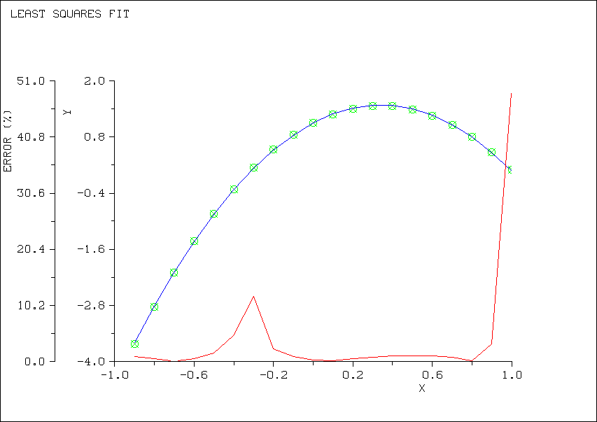
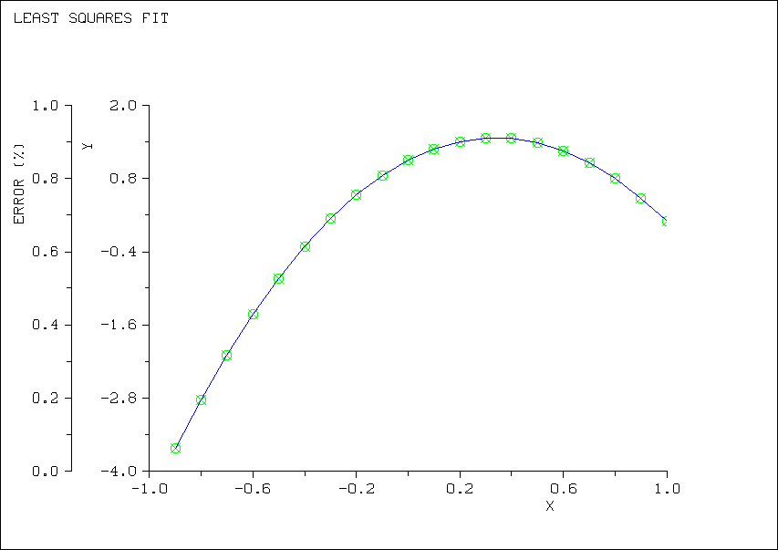
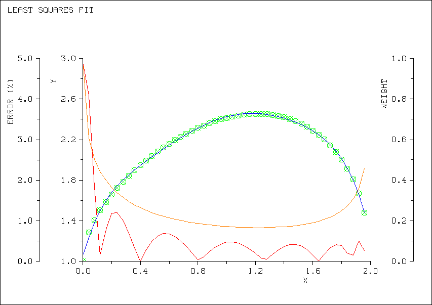
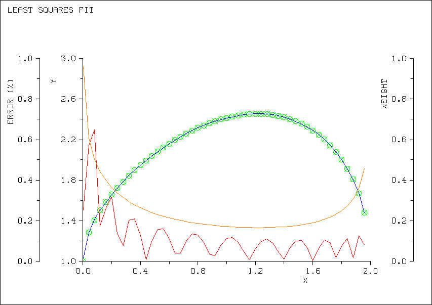
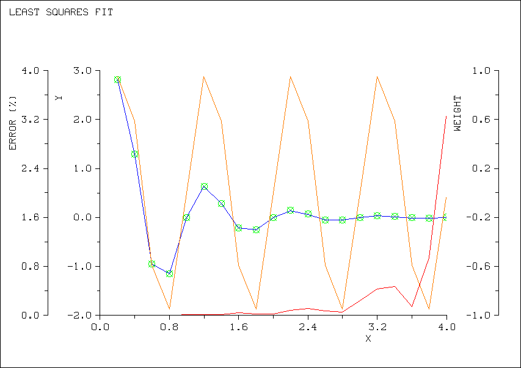

It also cannot
be applied to extrapolations beyond the table, as is possible with
the polynomial regression. This distinction is less significant than
it might appear, since extrapolation should be attempted very cautiously
in any case.
Example
If a function of one variable is represented by the following table
|
x |
f(x) |
|
10 |
138.42 |
|
20 |
34.605 |
|
30 |
15.38 |
|
40 |
8.651 |
|
60 |
3.847 |
|
| 90 |
1.721 |
|
130 |
0.873 |
Then the integral from 25 to 110 of f(x)dx may be computed by the
following statements:
DIMENSION XTAB(7),YTAB(7)
DATA XTAB/10,20,30,40,60,90,130/
DATA YTAB/138.42,34.605,15.38,8.651,3.847,1.721,0.873/
@TABLE(7,XTAB,YTAB,3,5)
Y=INTEGGL(FUN,25,110,2)
where the integrand is given by
FMODEL FUN(X)
FUN=#LOOKUP(X)
END
3.3.2. General Least Squares Data Fitting (FITxxx)
The built-in procedure FIT with its various entry points (FIT, FITB,
FITT, FITBT, FITW, FITBW, FITTW, and FITBTW) provides for a variety
of least squares data fitting applications, which may be generally
expressed as follows.
Given a function f(x) defined by a set of discrete values on the interval
(a,b) of (f(x)-g(x))**2 is a minimum. The most common application
is to fit a curve to a set of measurements. However, another use
is to construct an alternate functional representation, such as a
Fourier expansion of a cyclic function. A related procedure, SFIT,
extends these capabilities to multivariable approximation, e.g. surface
fitting.
The approximation function is restricted to the following form:
G(X) = SUM OVER I OF C(I)*BASE(I,X) [I=1,2,...,n]
where the basis functions, BASE(I,X), are any arbitrary functions
of X and the C(I) are coefficients to be determined. With this definition
in mind, the FITxxx entries can solve either of two generalizations
of the least-squares problem:
(1) Find the N coefficients C(I) such that the integral
over [a,b] of
|
W(X)*(F(X)-T(X)*G(X))**2 is a minimum, where |
|
F(X) = |
The function to be approximated, defined by at
lease N discrete values on the interval [a,b] |
|
G(X) = |
The approximation function specified above |
|
W(X) = |
An error weighting function |
|
T(X) = |
A trend function |
(2) Find the least number of coeficients C(I) such that
the above error
integral has a specified upper bound.
The Basis Functions
TheThere is no limit, other than the usual memory and speed constraints,
on the number and complexity of the basis functions. They may be polynomials,
sines, exponentials, etc. If no specific basis is supplied, the powers
of x are used, i.e.,
BASE(I,X) = X**(I-1) .
Thus the default approximation function is simply a polynomial in
X.
The restriction of the approximation function to a linear combination
of the basis functions may sometimes be relaxed by a logarithmic transformation. For
example, to approximate F(X) by G(X)=A*EXP(B*X), solve the transformed
problem of fitting LOG(F(X)) with H(X)=C+D*X. Then the desired coefficients
are given by A=EXP(C) and B=D.
Although a constant basis function is allowed, no basis function may
be uniformly zero for all values of the independent variable. Failure
to satisfy this constraint will produce indeterminate results.
The Weight Function
The need for weighted least squares approximation occurs more often
than may be supposed. For example, the data being approximated may
not have uniform measurement effors, in which case each measurement
should be weighted inversely by its estimated systematic error. The
usual measure is the standard deviation. A special case arises when
the error is proportional to the measurement itself, i.e., when there
is a uniform percentage error. The appropriate weighting function
is then the inverse square of the measurement.
Another circumstance which is less frequently recognized arises when
the data are poorly distributed over the approximation interval. The
least-squares norm is a global criterion, i.e., it says nothing about
the approximation at any specific point but rather determines one
which gives a "best" overall fit. When there are many measurements
in one portion of the interval in comparison to another, the dense
segment will be assigned a far greater significance, and the approximation
might be very poor in the sparse region. Yet the distribution of
data may represent nothing more than an idiosyncrasy of the data acquisition
method. To counterbalance this bias, the sparse data may be assigned
relatively heavy weights.
In the normal (default) case, the entries (FIT, FITB, FITT, FITBT)
use uniform weighting, i.e. W(X)=1.0. Another standard option is
inverse square weighting, to deal with the case of uniform percentage
error. For all other cases (entries FITW, FITBW, FITTW, and FITBTW)
the calling program must supply a function which calculates W(X) given
a value of X.
The Trend Function
The use of a trend function allows a known functional dependency to
be taken out of the approximation. A typical application involves
data representing high frequency variations of a known low frequency
base component. It would be very difficult to characterize such data
if the amplitude of the base component is large in comparison to the
variations, since it would "swamp out" their influence on the approximation. However,
if the base component is defined as a trend function, a Fourier basis
would comfortably approximate the residual high frequency components.
(Note that the constant term in the Fourier basis will give the amplitude
of the base component.)
Another example arises when approximating a damped oscillation of
known frequency. In this case, the basic oscillation can be specified
as the trend function and the damping can be approximated by an exponential
series. On the other hand, an attempt to characterize both the oscillation
and damping with a common approximation function is unlikely to succeed,
particularly if the interval covers several cycles.
The default case employs no trend function (entries FIT, FITB, FITW,
and FITBW), i.e. T(X)=1.0. When one is required (entries FITT, FITBT,
FITTW, and FITBTW), the calling program must supply a function (OPERATOR)
which calculates T(X) given a value of X as its argument.
The Approximation Rule
In the first of the two modes of use, the calling program prescribes
the specific number and type of basis functions to be used. For example,
it might specify that G(X) is a fourth degree polynomial, using the
five basis functions
1 X X**2 X**3 X**4.
Then FITxxx will determine the five coefficients which minimize the
error (in a least-squares sense) among all representations involving
fourth degree polynomials.
While this may be the best approximation using this basis, it may
be quite unsatisfactory if the basis was poorly chosen or it the number
of basis functions is too small (or even too large). To accommodate
such circumstances, the calling program may specify not only the coefficients
of the basis but also the minimum number of terms necessary to satisfy
the prescribed approximation tolerance. The procedure employed is
to expand the basis progressively until either a suitable approximating
function is formed or the algorithm determines that further expansion
would be fruitless. In this process, the first attempt chooses a
single basis function and then adds others one at a time in a prescribed
sequence. When the default polynomial basis is chosen, the sequence
in which the basis is expanded is the natural one of increasing powers
of X, i.e. a progression of increasing order polynomials is tried. Conversely,
when the calling program defines the basis, the functions may be arbitrarily
ordered on the index I so that they enter the approximation in any
desired manner.
When choosing which of the two rules to apply, it should be noted
that the second rule may be no more time-consuming that the first,
even though it involves a sequence of approximations. This is due
to the algorithm (briefly described below). Thus it might appear
that the second rule is invariably preferable. In fact, it may be
essential to determine a specific number of coefficients because of
their physical significance, thereby requiring the use of the first
rule.
The FIT Algorithm
The technique employed by FIT is to form the approximation from an
orthogonal transformation of the basis. This is one of the best-conditioned
methods and is relatively insensitive to numerical error. Moreover,
it enforces stability by detecting and removing any redundant (linearly
dependent) functions from the basis by setting their coefficients
to zero. Of the alternate methods, only the optimization solver HERA
has a capability to recognize linear dependencies automatically and
its resolution, which is to select a minimum norm combination, is
less suitable for data approximation problems.
Many approximation functions are selected on theoretical grounds rather
than for their desirable numerical properties, and linear dependencies
occur frequently in practice, particularly when approximating over
a fairly small interval. Actually, this valuable capability might
be viewed as a drawback if it is essential to compute a full set of
coefficients when applying the first approximation rule. Indeed this
view is reinforced when it is known that the basis functions are theoretically
independent. On the contrary, however, this view is fallacious. Functions
which are linearly independent over the full range of X may exhibit
significant dependence over a limited interval, and moreover the data
may be inadequate to characterize the desired approximation function.
The error integral is computed by a trapezoidal rule approximation. This
is much more precise than the usual rectangular rule, at a modest
cost for additional computation. Note that the minimization of the
sum of the squares of the errors, as in a standard statistical regression,
is nothing more than the rectangular rule to approximate the integral. This
choice derives more from the historical limitations of hand calculation
than from any currently valid reason and has very little to recommend
it.
Additional useful features of FIT include an automatic orthogonality
recheck as the basis is built up and a final iterative refinement
in which the error function is recomputed.
Using FIT
The general command-call to FIT is as follows:
@FIT[ [B][T][W] ] (npts, x, y, eps, w, ndeg, kout, mr, nc, c ,err,
[,base] [,trend] [,weight]
where:
| | npts |
the number of discrete data (minimum 2); |
| | x |
the independent variable vector containing at least npts monotonically increasing values; |
| | y |
the function vector containing function values corresponding to each x value; |
| | eps |
maximum error tolerance - the approximation will attempt to limit theleast-squares error to eps**2; |
| | w |
relative error weighting trigger (nonzero value); |
| | ndeg |
maximum polynomial degree or maximum number of basis functions to be used (ndeg=0 chooses default value of 10); |
| | kout |
output report control. Set zero to suppress all output. Set 1-4 to obtain increasingly detailed reports as described below; |
| | mr |
memory/run-time flag. Set nonzero to activate
a special mode which sacrifices running speed for memory economization. This saves
an array of NDEG*NPTS values but costs from 2 to 10 times longer
execution times; |
| | nc |
number of active coefficients in array c (output); |
| | c |
output coefficient array, must be dimensioned
in calling program sufficient to contain all coefficients computed in FITxxx; |
| | err |
an output variable which returns the calculated
least-squares error on success, and returns negative flag values on failure: -1.0 for
invalid input argument value(s)-2.0 for x not monotonically increasing -3.0 for too few non-redundant data; |
|
| | base |
external name of a basis OPERATOR function
(valid for entries FITB,FITBT, FITBW, and FITBTW only); |
| | trend |
external name of a trend OPERATOR function
(valid for entries FITT,FITBT, FITTW, and FITBTW only);
|
| | weight |
external name of a weight OPERATOR function
(valid for entries FITW, FITBW, FITTW, and FITBTW only).
|
The x vector, as noted must be monotonically increasing, but
redundant values are permitted. The algorithm does not perform scaling
and best results are obtained if the values of both x and y
are scaled to order unity. The error integral limits are taken as
x1and xnpts, i.e. the approximation is
not extrapolated beyond the range of actual data values. Such extrapolation
will be valid only if the data are sufficient for a global fit.
The calculated error, err, may not be bounded by the specified
eps if the chosen basis is inadequate. Since err incorporates
the optional error weighting, this might also occur under heavy weighting
conditions. Whether the resulting approximation is satisfactory or
not is a matter for analysis.
Specifying Basis Functions - To specify an arbitrary basis,
define an OPERATOR function in the program which returns a value of
BASE(I,X) given values of I and X as its arguments. The sequencing
of basis functions, as indexed by I, may be freely chosen. For example,
suppose that the basis consists of the following four functions:
1 EXP(X) EXP(2*X) EXP(3*X)
then the required OPERATOR function could be programmed as follows:
OPERATOR EXBASIS(INDEX,XVAL)
EXBASIS=EXP(XVAL*(INDEX-1))
END
To use this basis, any program unit referencing it in a call upon
FITB, FITBT, FITBW, or FITBTW must contain EXBASIS in an EXTERNAL
declaration.
Specifying a Trend Function - A trend function is defined in a
similar manner, i.e. to use a trend function of EXP(-X), the following code will
suffice:
OPERATOR TREND(XX)
TREND=EXP(-XX)
END
Likewise, to use this trend function, any program unit referencing
it in a call upon FITT, FITBT, FITTW, or FITBTW must contain TREND
in an EXTERNAL declaration.
Specifying Weighting - Weight function selection has two alternatives. For
arbitrary weighting, the weight function is defined in the same way
as the trend function. For example, to weight positive data twice
as heavy as negative data, the following function could be used:
OPERATOR PICKW(XV)
IF (Y(XV).LT.0) THEN
PICKW=1
ELSE
PICKW=2
ENDIF
END
To use this weight function, any program unit referencing it in a
call upon FITW, FITBW, FITTW, or FITBTW must contain PICKW in an external
declaration. Also, since the array Y is referenced in this OPERATOR,
a GLOBAL ALL declaration is presumed to have preceeded the PROBLEM
declaration.
The alternate form of weighting, relative weighting, is chosen by
setting the w parameter nonzero. In this case the FIT procedure
will internally construct the weight function
WT(xi) = 1/y(xi)2
subject to the constraint that the maximum weight will be
1/SQRT(ABS(w)).
This limit is necessary to avoid inordinate weighting as y(xi)
takes on very small values. One way of looking at the value of WT
is that it specifies an estimate of the absolute measurement precision,
since all data smaller in absolute value than w will be weighted
identically.
Choosing the Approximation Rule (eps and ndeg) - The approximation
rule is chosen according to the values of eps and ndeg
|
eps |
ndeg |
Meaning
|
|
| 0 |
0 |
Rule 1, using 10 basis functions or a 10th degree
polynominial (11 basis functions) |
polynomial
(11 basis functions)
|
| 0 |
+ |
Rule 1, using ndeg basis functions or and ndeg-th
degree polynomial (ndeg+1 basis functions) |
degree
polynomial (ndeg+1 basis functions)
|
| + |
0 |
Rule 2, satisfying eps, using a maximum of 10
basis functions or a 10-degree polynomial |
basis functions
or a 10-degree polynomial
|
| + |
+ |
Rule 2, satisfying eps, using a maximum of 10
basis functions or an ndeg-th degree polynomial |
ndeg basis functions
or an ndeg-th degree polynomial
Regardless of the choice of ndeg, a limit of npts-1 is imposed upon
its value.
Output Reporting - The output report is progressively enhanced
as larger values of kout are selected. The minimum report
(kout=1) merely gives the computed error, a notation of success
or failure, and (possibly) some messages indicating computational
problems encountered, such as linear dependencies in the basis. Because
these messages are useful in assessing the significance of the results,
it is generally undesirable to suppress all output (kout=0).
The information provided by kout=1,2,3 is shown and explained
in one of the later examples. The maximum report (kout=4)
adds graphic output to the report by internally accessing the graphics
subsystem. The mode of graphics output is selected by the GRAPHICS
metacommand. This graph displays the data being approximated, the
approximating curve, the approximation error curve and the error weighting. If
the weighting is uniform, a plot of the trend function is substituted,
unless it is also uniform, whence only two curves are plotted. The
error curve is shown as a percentage and is highly useful in highlighting
any weaknesses in the approximation. This curve will always have
the oscillatory shape characteristic of approximations formed from
othogonal functions.
POLYDEG - Simple FIT Entry for Approximation Rule 1 - The entry
POLYREG is a short form of FIT which uses approximation rule one. Its
usage is as follows:
@POLYDEG (npts,x,y,ndeg,kout,nc<,c,err)
This entry is a short form of
@FIT(npts,x,y,0,0,ndeg,kout 0,nc,c,err)
POLYEPS - Simple FIT Entry for Approximation Rule 2 - The
entry POLYEPS is a short form of FIT which uses approximation rule
two. Its usage is as follows:
@POLYEPS(npts,x,y,eps,kout,nc,c,err)
This entry is a short form of
@FIT (npts,x,y,eps,
0,0,kout,0,nc,c,err)
Examples
The first example illustrates the use of FIT to represent simple data
using the two different approximation rules. The first fit, using
rule 1 applies a quadratic to the data, resulting in an error of just
over 1 percent. The second fit, using rule two specifies a maximum
error of 0.01 percent and achieves condsiderably better than this
via a cubic fit.
GRAPHICS FILE
PROBLEM EASYFIT
DYNAMIC X,Y,C1,C2,Y1,Y2
ALLOT X(20),Y(20),C1(20),C2(20)
DO 10 I=1,20
XI=I
XI=(XI-10)/10
X(I)=XI
Y(I)=1.1+2.2*XI-3.3*XI**2+0.1*XI**3
10 CONTINUE
TABULATE X,Y
C Try a quadratic fit via POLYDEG
C @POLYDEG(20,X,Y,2,NC1,C1,ERR1)
@CHRSIZE(0.05)
@FRAME(0,.5,5,4)
@FIT(20,X,Y,0,0,2,4,0,NC1,C1,ERR1)
C Now try to fit within 0.0001 via POLYEPS
C @POLYEPS(20,X,Y,1D-4,NC2,C2,ERR2)
@CHRSIZE(0.05)
@FRAME(0,.5,5,4)
@FIT(20,X,Y,1D-4,0,0,4,0,NC2,C2,ERR2)
C Compare results using the coefficients to calculate functions
ALLOT Y1(20),Y2(20)
@POLYFIT(NC1,C1,20,X,Y1)
@POLYFIT(NC2,C2,20,X,Y2)
ROWPRINT ERR1
TABULATE Y,Y1,Y2
END
PROCEDURE POLYFIT(NC,C,NX,X,Y)
DIMENSION C(*),X(*),Y(*)
DO 10,J=1,NX
R=C(1)
XJ=X(J)
DO 5 K=1,NC-1
R=R+C(K+1)*XJ**K
5 CONTINUE
Y(J)=R
10 CONTINUE
END
N X Y
1. -0.900000E+00 -0.362590E+01
2. -0.800000E+00 -0.282320E+01
3. -0.700000E+00 -0.209130E+01
4. -0.600000E+00 -0.142960E+01
5. -0.500000E+00 -0.837500E+00
6. -0.400000E+00 -0.314400E+00
7. -0.300000E+00 0.140300E+00
8. -0.200000E+00 0.527200E+00
9. -0.100000E+00 0.846900E+00
10. 0.000000E+00 0.110000E+01
11. 0.100000E+00 0.128710E+01
12. 0.200000E+00 0.140880E+01
13. 0.300000E+00 0.146570E+01
14. 0.400000E+00 0.145840E+01
15. 0.500000E+00 0.138750E+01
16. 0.600000E+00 0.125360E+01
17. 0.700000E+00 0.105730E+01
18. 0.800000E+00 0.799200E+00
19. 0.900000E+00 0.479900E+00
20. 0.100000E+01 0.100000E+00
--- LEAST SQUARES APPROXIMATION REPORT
-------------------------------------
[1] 20 DATA APPROXIMATED BY
POLYNOMIALS OF DEGREE 2
WITH NO ERROR WEIGHTING
[2] BEST APPROX
COEFS (ORTHOG ONES) PROGRESSIVE
L.S. ERROR
PC( 1) = 0.2867772E+00 0.1387E+01
PC( 2) = 0.1459837E+01 0.8961E+00
PC( 3) = -0.1235090E+01 0.1345E-01
BEST APPROX COEFS OF POWERS OF X
CF( 1) = 0.1097270E+01
CF( 2) = 0.2254095E+01
CF( 3) = -0.3285000E+01
[3] LEAST SQUARES ERROR 0.1345E-01
MAXIMUM ERROR 0.3363E-01 (POINT
20) WITH AVERAGE
ERROR 0.1244E-01
--- LEAST SQUARES
APPROXIMATION REPORT
-------------------------------------
[1] 20 DATA APPROXIMATED BY POLYNOMIALS OF DEGREE 3
WITH NO ERROR WEIGHTING
[2] BEST APPROX COEFS (ORTHOG ONES) PROGRESSIVE L.S. ERROR
PC( 1) = 0.2867772E+00 0.1387E+01
PC( 2) = 0.1459837E+01 0.8961E+00
PC( 3) = -0.1235090E+01 0.1345E-01
PC( 4) = 0.1853393E-01 0.4945E-15
BEST APPROX COEFS OF POWERS OF X
CF( 1) = 0.1100000E+01
CF( 2) = 0.2200000E+01
CF( 3) = -0.3300000E+01
CF( 4) = 0.1000000E+00
[3] ERROR CRITERION 0.1000E-03
SATISFIED WITH LEAST SQUARES ERROR 0.4945E-15
MAXIMUM ERROR 0.1479E-14 (POINT 20) WITH AVERAGE
ERROR 0.3963E-15
VARIABLE VALUES .....
ERR1 0.134459E-0
Y Y1 Y2
1. -0.362590E+01 -0.359227E+01 -0.362590E+0
1
2. -0.282320E+01 -0.280841E+01 -0.282320E+01
3. -0.209130E+01 -0.209025E+01 -0.209130E+01
4. -0.142960E+01 -0.143779E+01 -0.142960E+01
5. -0.837500E+00 -0.851027E+00 -0.837500E+00
6. -0.314400E+00 -0.329968E+00 -0.314400E+00
7. 0.140300E+00 0.125392E+00 0.140300E+00
8. 0.527200E+00 0.515051E+00 0.527200E+00
9. 0.846900E+00 0.839011E+00 0.846900E+00
10. 0.110000E+01 0.109727E+01 0.110000E+01
11. 0.128710E+01 0.128983E+01 0.128710E+01
12. 0.140880E+01 0.141669E+01 0.140880E+01
13. 0.146570E+01 0.147785E+01 0.146570E+01
14. 0.145840E+01 0.147331E+01 0.145840E+01
15. 0.138750E+01 0.140307E+01 0.138750E+01
16. 0.125360E+01 0.126713E+01 0.125360E+01
17. 0.105730E+01 0.106549E+01 0.105730E+01
18. 0.799200E+00 0.798146E+00 0.799200E+00
19. 0.479900E+00 0.465106E+00 0.479900E+00
20. 0.100000E+00 0.663654E-01 0.100000E+00
ELAPSED TIME = 17.86 SECONDS
FIG 3-4. Printed Output from EASYFIT.


[ck missing the red curve above, like above, lower blip.
The second example uses a set of exponential basis functions and relative
weighting to fit a difficult function. The entry FITB to procedure
FIT is applied twice, invoking approximation rule 2 for a 1 percent
error and a 0.1 percent error. The first case is satisfied with a
6-degree polynomial. The second case appied a 14-degree polynomial,
but could not quite satisfy the error criterion. The results, however,
show a considerably better fit than the first.
--- LEAST SQUARES APPROXIMATION REPORT
-------------------------------------
[1] 50 DATA APPROXIMATED BY 7 SUPPLIED BASIS FUNCTIONS
WITH RELATIVE ERROR WEIGHTING
[2] BEST APPROX COEFS (ORTHOG ONES) PROGRESSIVE L.S. ERROR
PC( 1) = 0.1370756E+01 0.2033E+00
PC( 2) = 0.9483773E-01 0.1917E+00
PC( 3) = -0.2647217E+00 0.3159E-01
PC( 4) = -0.2540309E-01 0.2585E-01
PC( 5) = -0.2895539E-01 0.1551E-01
PC( 6) = 0.3642110E-02 0.1530E-01
PC( 7) = -0.1695599E-01 0.9341E-02
BEST APPROX COEFS OF BASIS FUNCTIONS
CF( 1) = 0.2771405E+02
CF( 2) = -0.6424996E+01
CF( 3) = -0.5052247E+02
CF( 4) = 0.8220598E+00
CF( 5) = 0.4802202E+02
CF( 6) = -0.4424675E-01
CF( 7) = -0.1851455E+02
[3] ERROR CRITERION 0.1000E-01
SATISFIED WITH LEAST SQUARES ERROR 0.9341E-02
MAXIMUM ERROR 0.5187E-01 (POINT 1) WITH AVERAGE ERROR 0.5850E-02
X Y YF
1. 0.000000E+00 0.100000E+01 0.105187E+01
2. 0.400000E-01 0.128555E+01 0.123501E+01
49. 0.192000E+01 0.166971E+01 0.166139E+01
50. 0.196000E+01 0.148173E+01 0.148573E+01
--- LEAST SQUARES APPROXIMATION REPORT
-------------------------------------
/NOTICE/ - BASE FUNCTION NO. 14 IS LINEARLY DEPENDENT ON THE OTHERS
/NOTICE/ - BASE FUNCTION NO. 15 IS LINEARLY DEPENDENT ON THE OTHERS
[1] 50 DATA APPROXIMATED BY 15 SUPPLIED BASIS FUNCTIONS
WITH RELATIVE ERROR WEIGHTING
[2] BEST APPROX COEFS (ORTHOG ONES) PROGRESSIVE L.S. ERROR
PC( 1) = 0.1370756E+01 0.2033E+00
PC( 2) = 0.9483773E-01 0.1917E+00
PC( 3) = -0.2647217E+00 0.3159E-01
PC( 4) = -0.2540309E-01 0.2585E-01
PC( 5) = -0.2895539E-01 0.1551E-01
PC( 6) = 0.3642110E-02 0.1530E-01
PC( 7) = -0.1695599E-01 0.9341E-02
PC( 8) = 0.3849200E-02 0.8927E-02
PC( 9) = -0.9688780E-02 0.5639E-02
PC(10) = 0.3105145E-02 0.5185E-02
PC(11) = -0.5711304E-02 0.3200E-02
PC(12) = 0.2068583E-02 0.2839E-02
PC(13) = -0.3299867E-02 0.1692E-02
PC(14) = 0.0000000E+00 0.0000E+00
PC(15) = 0.0000000E+00 0.0000E+00
BEST APPROX COEFS OF BASIS FUNCTIONS
CF( 1) = -0.1662087E+05
CF( 2) = 0.5060125E+04
CF( 3) = 0.3853357E+05
CF( 4) = -0.1079146E+04
CF( 5) = -0.6255262E+05
CF( 6) = 0.1574062E+03
CF( 7) = 0.6937912E+05
CF( 8) = -0.1492850E+02
CF( 9) = -0.4995825E+05
CF(10) = 0.8280468E+00
CF(11) = 0.2099899E+05
CF(12) = -0.2035842E-01
CF(13) = -0.3903203E+04
CF(14) = 0.0000000E+00
CF(15) = 0.0000000E+00
[3] FAILED TO SATISFY ERROR CRITERION 0.1000E-02
WITH LEAST SQUARES ERROR 0.1692E-02
MAXIMUM ERROR 0.5187E-01 (POINT 1) WITH AVERAGE ERROR 0.5850E-02
X Y YF
1. 0.000000E+00 0.100000E+01 0.100218E+01
2. 0.400000E-01 0.128555E+01 0.127825E+01
49. 0.192000E+01 0.166971E+01 0.167178E+01
50. 0.196000E+01 0.148173E+01 0.148052E+01
ELAPSED TIME = 32.40 SECONDS
FIG 3-6. Printed Output from HARDFIT


PROBLEM HARDFIT
EXTERNAL BASE
DYNAMIC X,Y,YF,C1
ALLOT X(50),Y(50),YF(50),C1(20)
DO 10 I=1,50
XI=0.04*(I-1)
X(I)=XI
Y(I)=1+SQRT(ABS(XI*(XI+1)*(XI-2)))
10 CONTINUE
C Try fit within 1 percent
@CHRSIZE(.05)
@FRAME(0,1,5,4)
@FITB(50,X,Y,.01,1E-6,15,4,0,NC1,C1,ERR1,BASE)
@FUNX(X,YF,50,NC1,C1)
TABULATE X,Y,YF
C Try fit withing .1 percent
@CHRSIZE(.05)
@FRAME(0,1,5,4)
@FITB(50,X,Y,.001,1E-6,15,4,0,NC1,C1,ERR2,BASE)
@FUNX(X,YF,50,NC1,C1)
TABULATE X,Y,YF
END
PROCEDURE FUNX(X,YF,N,NC,C)
DIMENSION X(*),YF(*),C(*)
DO 10 I=1,N
YF(I)=0
DO 10 J=1,NC
YF(I)=YF(I)+C(J)*BASE(J,X(I))
10 CONTINUE
END
OPERATOR BASE(I,XX)
F=I/2
BASE=EXP(F*XX*(-1)**I)
END
The output reports of these examples were generated using kout=4.
If kout had been set to 1, only item [3] would have been printed.
This shows the error criterion (eps) and the actual least-squares
error (err). It also flags the datum with the largest absolute
maximum error and gives the average absolution error over all the
data. If any computational problems had arisen, this output option
would cause suitable diagnostics to be issued.
Choice of kout=2 adds item [1] to the above described output.
Basically, this information simply describes the problem being solved. It
denotes the number of data and the number of basis functions employed
in the approximation. It also flags the use of a trend and/or weight
function as appropriate.
Selecting kout greater than 2 adds the detailed breakdown given
in item [2]. The first segment shows the coefficient of the orthogonalized
basis used to form the approximation. These coefficients cannot,
of course, be used, but they provide some information. If any have
conspicuously different orders of magnitude from the others, say by
1.0e+6 or so, then the basis may have near or actual linear dependencies. The
parallel column on the right gives very useful information. Each
value shows the actual least-squares error as the basis is built up
function-by-function, i.e. in the first application of FITB in the
second (HARDFIT) example, the error was .02585 after the first four
basis functions had been used. Often and examination of this progression
can suggest a reduced or re-ordered basis which would give a satisfactory
approximation with less computation. Also, when the disired error
is not satisfied, this progression can indicate how many more basis
functions are needed to achieve it.
The third example illustrates the use of basis and trend functions
to fit a periodic function through application of FITBT.
PROBLEM DAMPER
EXTERNAL BASIS,TREND
DYNAMIC X,Y,C1,SAMPLE,VALUE,FITVAL
ALLOT X(20),Y(20),C1(20)
@STREAM('SUMMARY') [ck]
DO 10 I=1,20
XI=I
X(I)=XI/5
Y(I)=4*SIN(6.283185*X(I))*EXP(-1.5*X(I))
10 CONTINUE
@PAGESUM('Raw Data') [ck]
TABULATE X,Y
@FITBT(20,X,Y,.0001,0,15,4,0,NC1,C1,ERR1,BASIS,TREND)
=DATA(X(1),X(3),X(5),X(8),X(15))
=DATA(Y(1),Y(3),Y(5),Y(8),Y(15))
@PAGESUM('Sample') [ck]
TABULATE SAMPLE,VALUE
ALLOT FITVAL(5)
DO 20 I=1,5
POINT=SAMPLE(I)
S=0
DO 20 J=1,NC1
S=S+C1(J)*BASIS(J,POINT)
FITVAL(I)=S*TREND(POINT)
20 CONTINUE
@PAGESUM('Sample Fit') [CK]
TABULATE SAMPLE,VALUE,FITVAL
END
OPERATOR BASIS(I,XX)
BASIS=EXP((1-I)*XX)
END
OPERATOR TREND(XX)
TREND=SIN(6.283185*XX)
END
X Y
1. 0.200000E+00 0.281824E+01
2. 0.400000E+00 0.129033E+01
19. 0.380000E+01 -0.127288E-01
20. 0.400000E+01 -0.119770E-07
--- LEAST SQUARES APPROXIMATION REPORT -------------------------------------
[1] 20 DATA APPROXIMATED BY 8 SUPPLIED BASIS FUNCTIONS
MULTIPLIED BY A SPECIFIED TREND FUNCTION
WITH NO ERROR WEIGHTING
[2] BEST APPROX COEFS (ORTHOG ONES) PROGRESSIVE L.S. ERROR
PC( 1) = 0.7520244E+00 0.5456E+00
PC( 2) = 0.1047825E+01 0.9331E-01
PC( 3) = 0.1807159E+00 0.1058E-01
PC( 4) = -0.1998658E-01 0.2628E-02
PC( 5) = 0.4788487E-02 0.9342E-03
PC( 6) = -0.1690955E-02 0.3469E-03
PC( 7) = 0.6118271E-03 0.1476E-03
PC( 8) = -0.2580464E-03 0.6538E-04
BEST APPROX COEFS OF BASIS FUNCTIONS
CF( 1) = -0.3487101E-02
CF( 2) = 0.5497682E+00
CF( 3) = 0.9395605E+01
CF( 4) = -0.2387632E+02
CF( 5) = 0.5531353E+02
CF( 6) = -0.8017998E+02
CF( 7) = 0.6323243E+02
CF( 8) = -0.2060228E+02
[3] ERROR CRITERION 0.1000E-03
SATISFIED WITH LEAST SQUARES ERROR 0.6538E-04
MAXIMUM ERROR 0.1349E-03 (POINT 16) WITH AVERAGE ERROR 0.4782E-0
SAMPLE VALUE FITVAL
1. 0.200000E+00 0.281824E+01 0.281824E+01
2. 0.600000E+00 -0.955902E+00 -0.955863E+00
3. 0.100000E+01 -0.269534E-06 -0.269495E-06
4. 0.160000E+01 -0.213291E+00 -0.213371E+00
5. 0.300000E+01 -0.402579E-07 -0.403551E-07
ELAPSED TIME = 11.75 SECONDS

FIG 3-8. Printed and Graphic Output from DAMPER
3.3.4. Surface Fitting (SFIT)
The FIT entry SFIT has the same argument sequence as FITB, but which
approximates the error integral by the rectangular rule rather than
the trapezoidal rule. A minor application of SFIT is to provide a
standard comparison with results obtained by alternate approximation
methods, most of which would use the rectangular rule. The principle
use, however is to perform surface fitting, i.e. the approximation
of functions of two or more variables. This feature cannot be employed
by the other entries of FIT because of the way in which the integral
is calculated.
When performing a surface fit, there are several differences in the
problem specification:
(1) A basis must be supplied, i.e. the default polynomial
basis is inadequate.
(2) The independent variable vector, X, does not contain
the values of the
independent variables. Instead, it is simply an index vector, which
will be
used to select the full set of data coordinates. Thus it always
takes the form:
X(I)=I FOR I=1,2, ...,NPTS
(3) The function vector, Y, contains the data values associated
with the
coordinates selected by X.
The following example makes this clear.
GLOBAL ALL
PROBLEM SURFACE
DIMENSION COORD(100,2),FUNXY(100),DEX(100),COEF(20)
EXTERNAL QUAD
K=0
DO 10 I=1,10
DO 10 J=1,10
K=K+1:<N>DEX(K)=K
COORD(K,1)=I ! X-COORDINATE
COORD(K,2)=FLOAT(J)/10 ! Y-COORDINATE
FUNXY(K)=1+FLOAT(I*J)/5+3*I*I-J*J
C THIS FUNCTION IS 1-100*Y**2+2*X*Y+3*X**2
10 CONTINUE
@SFIT(100,DEX,FUNXY,0,0,9,3,0,NC,COEF,ERR1,QUAD)
END
OPERATOR QUAD(II,PICK)
JPOW=INT(FLOAT(II-1)/3)
KPOW=MOD(II-1,3):<N>IP=PICK
IF(JPOW.EQ.0) THEN
A=1.0
ELSE
A=COORD(IP,1)**JPOW
ENDIF
IF(KPOW.EQ.0) THEN
B=1.0
ELSE
B=COORD(IP,2)**KPOW
ENDIF
QUAD=A*B
END
Minimax Polynomial Data Fitting (CHEBFIT)
3.3.5.
The built-in procedure CHEBFIT computes a minimax approximation polynomial
to a set of discrete data. The fit applies the Chebychev minimax
criterion, i.e. it minimizes the maximum deviation of the polynomial
from the data points. The more common least-squares approximation
applies a global measure of fit and guarantees nothing at any individual
point. The Chebychev fit, however, delivers the best possible fit
for a given polynomial degree as measured at every data point.
CHEBFIT requires rather more computation than least-squares approximators
(like POLYREG and FIT) and there are restrictions on the kinds of
data to which it may be applied. However, there are three circumstances
in which it should give significantly better results than least-squares
methods:
(1) For problems where there are relatively few data to
be approximated;
(2) For problems where the data are unevenly distributed
over the approxi-
mation interval, particularly when there are conspicuously dense
and
sparse regions; and
(3) For problems in which the quality of the data is uniformly
high, i.e. where
there is a common, small standard deviation.
One case where CHEBFIT is a poor choice is when the data contains
wild points or other highly deviant measurements. It should be noted,
however, that least-squares methods are also rather poor for such
data, although not as bad as a Chebychev fit. Ideally, such data
should be filtered before approximation is attempted, but where this
is unsuitable, a least-absolute-error approximation should be proformed
by means of an optimization solver (Refer to Appendix A for general
guidelines on the numerical approximation of data.)
CHEBFIT Usage - The general command-call to CHEBFIT takes the
form:
@CHEBFIT(npts,x,y,ndeg,
dev,a,b,kout)
where the arguments are:
| npts | the number of (x,y) data pairs (minimum 3),
|
| x | a vector of independent variable values,
|
| y | a vector of measurements associated with each x value,
|
| ndeg | fitting polynomial degree (maximum npts-2),
|
| dev | computed absolute maximum deviation of the fit,
|
| a | constant term in the fitting polynomial,
|
| b | a vector of the calculated coefficients of the powers of x,
kout | graphics output flag (nonzero produces graphics output)
The results specify the approximation polynomial such that
Y = A+ B(1)*X +B(2)*X**2 + ... + B(NDEG)*X**NDEG .
One restriction is perhaps obvious from the nature of the Chebychev
criterion. There must be not redundant data, i.e. multiple values
in the x-vector. To accommodate this possibility, CHEBFIT automatically
removes redundancies, replacing their measurement by an arithmetic
mean. A warning message is issued when this occurs, but note that
this might lead to a fatal error it the residual data are too few
to permit a Chebychev fit. (The process of reduction does not alter
the input x or y vectors).
CHEBFIT automatically scales the data to unit norm to reduce numerical
problems, also without modifying the input vectors. Nevertheless,
there are circumstances in which the approximation might fail:
(1) Poorly conditioned data,
(2) Data which cannot be well approximated by a polynomial.
The first problem is intrinsic with the data and can be resolved,
if at all, by selecting a lower order fit. In theory, the second
problem should never arise, but round-off and discretization errors
can nevertheless cause it to happen. The best resolution is to use
one of the other approximation methods which does not require a polynomial
basis, such as FITxxx or an optimization solver.
Whenever CHEBFIT fails, the deviation dev is returned as a negative
flag value. This should always be tested after the call if the polynomial
is to be used in subsequent computation.
3.4. Linear Algebra Operations
The linear algebra operations of FC are a departure from FORTRAN array
conventions. In FORTRAN, an array is merely a linear address space
which has no intrinsic dimensions and may be dimensioned differently
in different subroutines. In FC, the dynamic arrays have intrinsic
dimensions that are stored in the data-structure of the array, thus
they may be regarded as mathematical structures rather than merely
as address spaces. This provides a means of conforming array operations,
enabling FC to have built-in linear algebra operations. The linear
algebra syntax utilizes bracketed names to denote arrays. The form
name is used to indicate an array of arbitrary rank
(from 1 to 7). The form [name] will indicate a rank
2 matrix, and the form {name} will indicate a transposed
matrix.
Whenever an array is declared dynamic by appearing in a DYNAMIC declaration,
this name is translated into an integer scalar variable in FORTRAN,
and the integer variable is used as the pointer to the array record
in the managed region of the bucket common block. The variable is
initialized to zero, indicating that the array has not yet been allocated. Allocation
is performed by the ALLOT statement:
ALLOT name (d1, {d2 ,...d7}), ...
Deallocation is performed by the PURGE statement:
PURGE name , ...
which returns the deallocated bucket storage to free use, and resets
the integer pointer value to zero.
3.4.1. Array Assignment
Dynamic arrays of arbitrary rank may be used in array assignment operations.
In array assignment, all elements of the array appearing on the left
of the equal sign will receive values derived from the right-hand-side
expression. The simplest array assignments are the following:
<a> = b
<a> =- b
<a> = <c>
<a>= - <c>
<a> = (e)
<a> =-(e)
where ais a dynamic array, bis a scalar variable,
c is a dynamic array or a static [NOTE 6 This is the only form in
which a static array may appear in an array assignment operation.]
array; and e is a scalar expression.
The general rules for array assignment are:
- If the right hand side is a scalar or a static array then
the left hand side must already be allocated;
- If the right hand side is a dynamic array, the left hand
side must either be an unallocated dynamic (in which case it will
be allocated in the assignment to the size and shape of the first
right hand side array) or an allocated dynamic with same volume (product
of all dimensions) as the right hand side;
- Elements are assigned in column major order (as though both
left hand side and right hand side were vectors) without regard to
array shape;
- If the right-hand-side is a scalar, then the scalar value is replicated
without regard to array shape;
- The array to which the values are assigned may be the same as one or
even both of the right hand side array arguments, if they are dynamic.
In describing the right-hand-side operations, the following symbols
will b used:
A represents any dynamic array,
v represents any scalar variable or array element,
e represents any scalar
expression.
Where several such symbols are required to describe an
operation, they are distinguished by appending a subscripted number,
i.e.
A1,
A2,
v1,
v2,
e1,
e2, etc.
The following is a list of the array arithmetic operations:
| Operation Category |
Array Assignment Operation |
Statement Syntax
|
| Array Addition |
|
|
| Expression-Array Addition |
<A1>=(e)+<A2> |
|
| Array-Expression Addition |
<A1>=<A2+(e) |
|
| Variable-Array Addition |
<A1>=v + <A2>
|
Array-Variable Addition |
<A1>=<A2>+v
|
|
| Array-Array Addition |
<A1>=<A2>+<A3> |
| Array Subtraction |
|
|
|
| Expression-Array Subtraction |
<A1>=(e)-A2 |
|
| Array-Expression Subtraction |
<A1>=<A2>-(e) |
)
|
| Variable-Array Subtraction |
<A1>=v - A2 |
|
| Array-Variable Subtraction |
<A1>=<A2>- v |
|
| Array-Array Subtraction |
<A1>=<A2>-<A3> |
|
| Array Multiplication |
|
|
|
Expression-Array Multiplication |
<A1>=(e)*<A2> |
|
| Array-Expression Multiplication |
<A1>=A2* (e) |
|
Variable-Array Multiplication |
<A1=v * <A2> |
|
Array-Variable Multiplication |
<A1>=<A2>*v |
v
|
Array-Array Multiplication |
<A1>=<A2*A3> |
| Array Division |
|
|
|
Expression-Array Division |
<A1>=(e)/<A2> |
) / A2
|
Array-Expression Division |
<A1>=<A2/ (e)> |
(e
|
Variable-Array Division |
<A1>=v / <A2> |
<A2
|
Array-Variable Division |
<A1>=<A2>/v |
v
|
Array-Array Division |
<A1>=<A2>/<A3> |
|
Array Power |
|
|
Expression-Array Power |
<A1>=(e)**A2 |
|
Array-Expression Power |
<A1>=A2**(e)
|
|
Variable-Array Power |
<A1>=v |
**A2
|
Array-Variable Power |
<A1=A2**v |
>
v
|
Array-Array Power |
<A1>=<A2>**<A3> |
|
Array Absolute Value
|
|
|
Absolute value of expression |
<A1>=|(e)| |
|
Absolute value of variable |
<A1>=|v| |
|
|
Absolute value of array |
<A1>=|A2| |
Array Assignment Operation
|
Statement Syntax
| |
|
Sort an array |
<A1>=SORTA2 |
|
Reverse an array |
<A1>=REVERSEA2
|
Produce a ranking index array |
<A1>=RANKA2
|
|
Access gradient vector |
|
Gradient of a scalar variable |
<A1>=GRAD(v) |
)
|
Gradient of a scalar expression
[NOTE 7: An array element must be treated as an expression (surrounded by parentheses]. |
<A1>=GRAD((e)) |
| |
A1=GRAD(( e ))
|
|
| Access Hessian matrix |
Access Hessian matrix
|
|
|
| Hessian of a scalar variablee | <A1>=HESS(v) |
)
|
| Hessian of a scalar expression Hessian |
<A1>=HESS((e)) |
))
|
Assign values to an array |
<A> =DATA(e1, ... , en) |
|
|
|
| Eigenvalues and Eigenvectors [NOTE 9:
The vector A1 is a column vector of the eigenvalues of the
matrix A2 which must be both square and symmetric. THe matrix
A3, if present will contian all the eigenvectors as its
columns, in correspondence to the order of the eignevalus in A1.
The matrix A2 is not modified by this operation.] |
Eigenvalues and eigenvectors [note 9]
|
|
[A1 is a column vector of the eigenvalues of the matrix
[A2which must be both square and symmetric. The
matrix
[A3, if present will contain the eigenvectors as
it columns, in correspondence to the order of the eigenvalues in
[A1. The
matrix
[A2 is not modified by this operation.
|
Eigenvalues of a matrix |
<A1>=EIGEN[A2]
|
|
Eigenvectors of a matrix |
<A1>=EIGEN[A2] VECTORS[A3]
(ck) |
3.4.2. Matrix Algebra Assignment
The matrix algebra operations encompass the normal matrix operations,
including transpose, matrix product, and inversion. These operations
may only involve arrays of rank 2. The following rules apply.
- The left hand side must be an unallocated dynamic or a dynamic
matrix of exactly the right size and shape to hold the results of
the right-hand-side operation;
- Where there are two matrices on the right hand side, both
may be the same, but the left-hand-side matrix must not be the
same as either of the right-hand-side matrices
;
Matrix Transpose
A[1] = {A2}
In this operation,
A2is dimensioned m by
n and A1 os m bu m.
Matrix Product
[A1] = [A2] * [A3]
In this operation, A2 is dimensioned
i
by k,
A3 is k by j, and A1 is i by j.
Matrix Product Transpose
[A1] = {A3}
In this operation,
A2 is dimensioned i by k,
and
A1 is i by k.
Matrix Transpose Product
[A1] = {A2
} * [A3]
In this operation,
A2
is dimensioned
j by i,
A3 is j by k,
and
A1 is i by k.
Matrix Inverse
[A1] = INVERSE [A2]
In this operation,
A2and A1 must bei by i (square) matrices. If
A2is singular, but not identically zero, then
A1will be the pseudoinverse.
A2 is not modified in this operation.
Diagonal Matrix Generation
[A] = \v scalar variable right hand side
[A] = \(e) scalar expression right hand side
[A1] =\<A2> array right hand side
In this operation, if the right hand side is a scalar,
then the left hand side must be allocated. If the right hand side
is an array, then the left hand side may be unallocated, in which
case it will be allocated as a square matrix with the number of rows
and columns equal to the volume of the right-hand-side array. Otherwise,
the number of rows and columns of the left hand side must equal the
volume of the right hand side.
Matrix Row Meld
[A1] = [A2] /[A3]
This operation builds matrix A1 by stacking martrix A2 on top of A3
which may be identical) must have the same number of columns, and
[A1must initially be unallocated
or by a matrix of exactly the right shape.
Matrix Column Meld
[A1] = [A2,A3]
This operation builds matrix
A1 by concatenating
Aand
A3 together.
A2 and
A3 (which may be identical) may have the same number
of rows, and
A1 must initially be unallocated, or be a
matrix of exactly the right shape.
Matrix Extraction
Extract a column :
[A1] =< [A<>2], <R> , v >
[A1] =<[A>2],
<R, (e)
Extract a row:
[A1] =[A2]
, v ,<C> >
[A1] =[A2], (e ),<C> >
Extract a partition:
<[A1]=[A2 ],<R,<C
In this operation, the elements of
A2are extracted according to the row indexes specified by the second
argument and the column indexes specified by the third argument, where
either may be scalars or arrays but must be reals, not integers). The
row and column dimensions of
A1 correspond to the number
of elements of the second and third arguments respectively. Initially
A1 must be unallocated, or be an array of exactly
the right size and shape. In the cases where asterisks are used,
the index vector is internally generated.
3.5. Utilities
There are two categories of built-in utilities, functions and procedures.
The names used to call these utilities are aliases to the actual names. The
actual names always begin with FC or IFC, thus no conflict will arise
if the user avoids these prefixes.
3.5.1. Utility Functions
All of the following functions return scalar REAL*8 values.
Array-Scalar Functions
The following functions require a single argument that is a dynamic array:
ARRAYMAX(array) - Maximum value of arrayelements
ARRAYMIN(array) - Minimum value of array elements
ARRAYSUM(array)- Sum of array elements
ARRAYMUL(array) - Product of array elements
These functions regard the array as a linear array or vector,
processing all elements.
Scalar Functions
The following functions return scalar REAL*8 values:
| #BETA (x,y) |
- |
Beta function of greater than 60, or a negative integer) |
| #GAMMA(x)
| - |
Gamma function of x ( which must not be zero, greater than 60, or a negative integer) |
| #PROBINT (x) |
- |
Probability integral of x (for x real and positive) |
3.5.1. Utility Command Calls
These utilities are procedures, called via the command call syntax
shown.
BESSEL
Syntax:
@BESSEL(x,n,bjn,byn,bin,bkn)
Symbols:
| x |
real*8 |
independent varlaible (must not be zero or negative) |
| bjn |
real*8 |
Bessel function of first kind of order n |
| byn |
real*8 |
Bessel function of second kind of order n |
| bin |
real*8 |
mdified Bessel function of first kind of order n |
| bkn |
real*8 |
modified Bessel function of second kind of order n |
ARANK
Syntax
@ARANK(array, irank)
Symbols
| array | |
name of dynamic array |
| irank |
integer |
returned rank of array name |
ADIM Syntax:
@ADIM(array,
index, idim
Symbols:
| array |
|
name of dynamic array |
| index |
integer |
dimension index |
| idim |
integer |
retuned dimension value |
NODIAG
Syntax:
@NODIAG(number)
Symbol:
| number |
integer |
number of diagnostic message |
This utility suppresses diagnostic message printing of the particular
numbered diagnostic, which must be one of the following:
| Number |
|
Diagnostic Message |
| 1001 |
|
DIVISION BY ZERO -- DIVISOR REPLACED WITH nnnnnn.n |
| 1006 |
|
(WARNING) CHANGE IN AN INDEPENDENT VARIABLE VALUE MAY INVALIDATE
EXISTING PARTIAL DERIVATIVES |
| 1009 |
|
A PRINT FORMAT SKIP COUNT OF nnnn IS INVALID -- COUNT SET TO 1 |
| 1010 |
|
PRINT MARGIN (nnn) OUTSIDE VALID RANGE ( TO nnn) IS SET TO 1 |
| 1011 |
|
PRINT PRECISION (nn) OUTSIDE VALID RANGE (1 TO 14) IS SET TO 7 |
| 1012 |
|
PRINT FIELD WIDTH (nnn) OUTSIDE VALID RANGE (1 TO nnn) IS SET TO 21 |
| 1013 |
|
PRINT COLUMN COUNT (nnn) OUTSIDE VALID RANGE (1 TO nn) IS SET TO nn |
| 1014 |
|
QUADRATURE ORDER LESS THAN 2 -- ORDER SET TO 2 |
| 1015 |
|
QUADRATURE ORDER GREATER THAN 10 -- OEDER SET TO 10 |
| 1017 |
|
INCOMPATIBLE PRINT FORMAT CONTROLS PREVENT USE, I.E. .....
LEFT
MARGIN nn RIGHT MARGIN nnn, COLUMN COUNT nn
FIELD WIDTH nn PRECISION
nn LABELS cccccccc -- PRINT
USES THE DEFAULT FORMAT |
| 1022 |
|
SINCE NO DERIVATIVES ARE BEING COMPUTED, $PARTIAL RETURNS A VALUE OF
ZERO |
| 1023 |
|
SINCE ONLY FIRST DERIVATIVES ARE BEIND COMPUTED, $PARTIAL2 RETURNS A
VALUE OF ZERO |
| 1026 |
|
INFINITE FIRST DERIVATIVE OF ASIN/ACOS -- REPLACED BY nnnnnn.n |
| 1030 |
|
EXCESS FLAGS PROVIDED TO A SOLVER ARE IGNORED |
| 1034 |
|
OUT-OF-RANGE NUMERIC EXPONENT IS REPLACED BY MAXIMUM VALUE (250)
[CK] |
| 1035 |
|
SQRT(0) HAS INFINITE DERIVATIVES -- SQRT(nnnnn.n) IS SUBSTITUTED |
| 1036 |
|
A**B HAS INFINITE DERIVATIVES -- THEIR VALUES ARE REPLACED BY
nnnnn.N |
| 1039 |
|
LOOKUP ARGUMNET IS OUTSIDE TABLE BOUNDS -- THE CLOSEST END POINT IS
RETURNED AND DERIVATIVES (IF ANY) ARE SET TO ZERO |
| 1042 |
|
TABLE COLUMNS BEYOND THE CURRENTLY SPECIFIED LIMIT (nn) ARE IGNORED |
| 1043 |
|
OUT-OF-RANGE ARGUMENT TO name (I.E. nnnnnn.nn) IS REPLACED BY THE
LIMIT (nnnnnn.nn) |
| 1044 |
|
OUT-OF-RANGE VALUE OF A**B (EQUIVALENT TO EXP (nnnnnn.nn) IS
RPLEACED BY THE LIMIT EXP (nnnnnn.nn) |
| 1045 |
|
INFINITE VALUE CALCULATED FOR SOLVER CONTROL RHO -- A VLAUE OF ONE
IS ASSUMED |
| 1047 |
|
WARNING ... STANDARD DEVIATION SET ARBITRARILY TO ZERO SINCE THE
POLYNOMIAL FIT HAS NO DEGREES OF FREEDOM |
| 1048 |
|
WARNING ... REDUNDANT DATA REPLACED BY THEIR MEAN |
|
 [XXXXX recreate this eqn set]
[XXXXX recreate this eqn set]